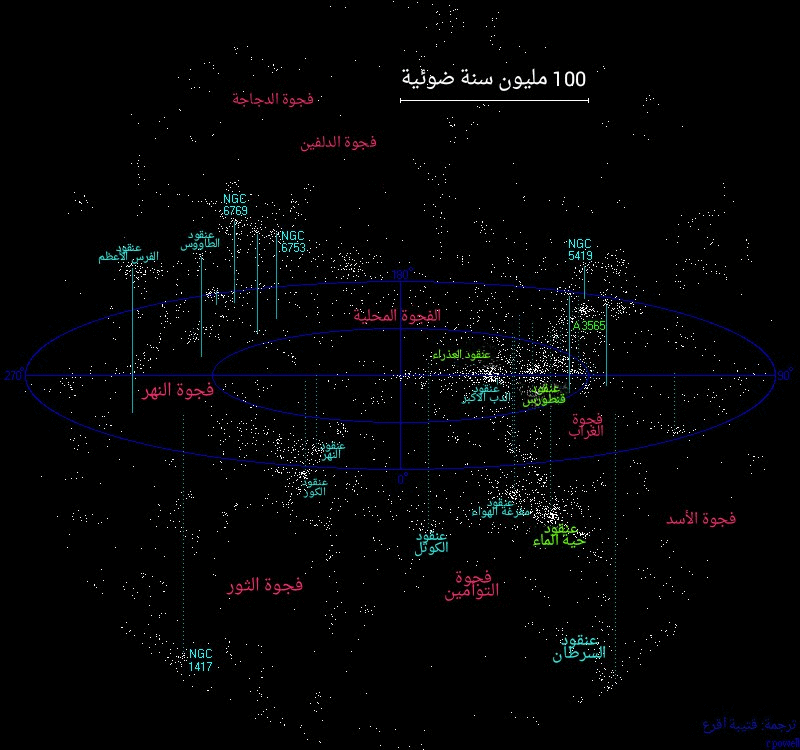
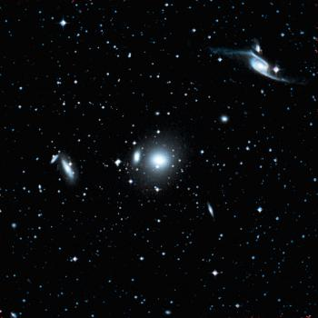
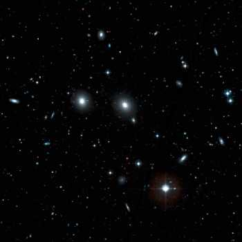

يظهر لنا هذا الرسم توزع المجرات ضمن مقياس 200 مليون سنة ضوئية. توضح المناطق في الفضاء المحيطة بعنقود العذراء الفائق. العنقود المسيطر داخل هذه المنطقة هو عنقود قنطورس المجري الفائق، والذي يشاهد منتشرًا من عنقود العذراء الفائق. تمت تسمية عنقود قنطورس الفائق من العنقود الكبير قنطورس (A3526)، بالإضافة إلى أن الطرف القريب من العنقود الفائق ظاهر في هذه الخريطة. يقع عنقود حية الماء Hydra cluster الكبير أسفل عنقود العذراء الفائق ويسمى (A1060). إلى الطرف اليساري من الخريطة يوجد بعض العناقيد المجرية الأقرب الموجودة في العنقود الهندي - الطاووس Pavo-Indus الفائق، والتي في معظمها تقع بعيدًا إلى ما وراء حدود الخريطة وهي 200 مليون سنة ضوئية. تظهر في هذه الخريطة العديد من الفجوات المعروفة voids - هذه الفجوات هي مناطق يتواجد فيها القليل من المجرات ووفق المعايير الكوسمولوجية فإنه لا تعتبر الفجوات الأقرب إلينا أنها كبيرة. يوجد هنا نسخة نيكاتيف لهذه الخريطة ويمكن طباعتها.

هنا لائحة بأغلب التجمعات والعناقيد المجرية الكبيرة الموجودة ضمن مقياس 200 مليون سنة ضوئية. العناقيد المهيمنة هي ثلاثة عناقيد: العذراء، قنطورس، حية الماء. هناك عنقود آخر غني بالمجرات في هذه المناطق ويسمى بعنقود آبل Abell cluster (A3565).
{لمن أراد معرفة مصطلحات أسماء الكوكبات يمكنك الرجوع إلى صفحة المخطط المجري إذ فيه لائحة بأسماء الكوكبات باللغة العربية ومقابلها بالإنكليزية.}
| الاسم | إحداثيات الاستواء (RA 2000) | الميل (Dec 2000) | الطول المجري الفائق (L°) | العرض المجري الفائق (B°) | عدد المجرات | سرعة الهروب (كم/ث) | المسافة (مليون سنة ضوئية) | العنقود الفائق |
|---|---|---|---|---|---|---|---|---|
| Virgo I | 12 30 | +11.5 | 103.7 | -2.8 | 100 | 960 | 50 | Virgo |
| Ursa Major S | 12 05 | +45.0 | 70.2 | +2.5 | 15 | 890 | 55 | Virgo |
| Ursa Major N | 11 50 | +52.0 | 62.7 | +2.7 | 20 | 1060 | 60 | Virgo |
| Fornax I | 03 35 | -35.0 | 263.3 | -41.5 | 40 | 1420 | 60 | - |
| Eridanus | 03 36 | -22.0 | 280.8 | -42.7 | 30 | 1550 | 70 | - |
| NGC4697 | 12 55 | -06.6 | 122.8 | -1.8 | 15 | 1200 | 70 | Virgo |
| Puppis | 08 00 | -27.0 | 155.9 | -71.2 | 40 | 2100 | 95 | - |
| Virgo M | 12 24 | +14.0 | 100.9 | -3.5 | 20 | 2240 | 105 | Virgo |
| Virgo W | 12 20 | +06.0 | 108.3 | -6.7 | 20 | 2290 | 105 | Virgo |
| NGC5676/IC1029 | 14 33 | +49.7 | 68.1 | +27.7 | 15 | 2340 | 110 | - |
| NGC5044 | 13 15 | -16.5 | 133.7 | +0.2 | 15 | 2510 | 115 | - |
| NGC5371 | 13 52 | +40.5 | 78.5 | +20.9 | 20 | 2540 | 120 | - |
| NGC3557 | 11 10 | -37.5 | 151.1 | -30.2 | 15 | 2660 | 125 | Hydra |
| NGC7172/IC5156 | 22 02 | -32.5 | 248.8 | +24.3 | 15 | 2660 | 125 | Pavo-Indus |
| Antlia | 10 30 | -34.5 | 148.3 | -38.5 | 30 | 2830 | 130 | Hydra |
| Telescopium | 20 10 | -48.3 | 220.0 | +23.8 | 15 | 2840 | 130 | Pavo-Indus |
| Centaurus/A3526 | 12 45 | -41.0 | 156.0 | -12.1 | 100 | 2990 | 140 | Centaurus |
| ESO507-25 | 12 51 | -26.5 | 141.9 | -7.8 | 20 | 3040 | 140 | Centaurus |
| NGC6753/IC4837A | 19 10 | -56.0 | 208.7 | +18.2 | 25 | 3100 | 145 | Pavo-Indus |
| NGC5011/5090 | 13 15 | -43.5 | 159.7 | -7.2 | 20 | 3180 | 150 | Centaurus |
| NGC3801/3800 | 11 41 | +17.5 | 94.1 | -12.1 | 20 | 3230 | 150 | - |
| IC5250/NGC7329 | 22 47 | -65.0 | 227.5 | -1.7 | 15 | 3230 | 150 | Pavo-Indus |
| Hydra/A1060 | 10 37 | -27.5 | 139.3 | -37.5 | 100 | 3360 | 155 | Hydra |
| A3565 | 13 34 | -33.6 | 151.3 | -0.8 | 40 | 3590 | 165 | Centaurus |
| Pavo/NGC6876 | 20 18 | -70.9 | 213.2 | +2.4 | 20 | 3820 | 180 | Pavo-Indus |
| Pegasus | 23 20 | +08.5 | 298.6 | +25.1 | 30 | 3840 | 180 | - |
| NGC6769/IC4845 | 19 19 | -60.6 | 209.5 | +13.5 | 30 | 4020 | 185 | Pavo-Indus |
| NGC5419/5488 | 14 06 | -33.7 | 153.7 | +5.4 | 30 | 4030 | 190 | Centaurus |
| NGC5152 | 13 27 | -29.7 | 147.1 | -1.0 | 20 | 4040 | 190 | Centaurus |
| NGC1417 | 03 45 | -04.6 | 305.0 | -42.0 | 25 | 4050 | 190 | - |
| Cancer | 08 19 | +21.5 | 56.0 | -47.5 | 30 | 4250 | 200 | - |
| NGC4709 | 12 49 | -41.0 | 156.1 | -11.3 | 40 | 4310 | 200 | Centaurus |
Fouque P, Gourgoulhon E, Chamaraux P, Paturel G, (1992), Groups of Galaxies within 80 Mpc, Astron Astrophys Supp, 93, 211.
Garcia A, (1993), General study of group membership. II. Determination of nearby groups, Astron Astrophys Supp, 100, 47.
Giuricin G, Marinoni C, Ceriani L, Pisani A, (2000), Nearby optical galaxies: selection of the sample and identification of groups, Astrophys J, 543, 178.
لدينا الكثير من اللاحتمية من معلومات حول عنقود الكوثل المجري، فهو يقع خلف المستوي المجري المحجوب بشدة عبر مجرتنا. ليس من المؤكد وجود عنقود حقيقي هنا، على الرغم من وجود مجرات في هذه المنطقة. يفترض فيما لو كان عنقود الكوثل موجودًا، فإنه قد يكون بحجم عنقود الكور وربما يبعد مسافة أقل بقليل من 100 مليون سنة ضوئية.
وبكلام آخر، فإنه من المحتمل أن لا يكون لعنقود السرطان وجود أبدًا. الدراسات الدقيقة في هذه المنطقة من السماء أثبتت وجود عناقيد العديد من المجموعات المجرية الصغيرة بجانب بعضها البعض.
 |
 |
{kind=link}